Published: 2022-08-23
Original link: https://www.cnphotos.net/academy/show-82.html
Rainy weather usually keeps most people indoors, but for photographers it is a great chance to take beautiful photos.
Even if you hate rain, going out to shoot on a rainy day can lift your spirits. Rain can change a familiar landscape and give you beautiful subjects you have never shot before. On an overcast day, you do not have to worry about the harsh light of the sun. The clouds act like a softbox and give you beautiful, even light.
Today, let us talk about some simple tips for shooting in the rain:
1. Keep your camera dry in the rain
Before you set out, make sure your camera is protected against water. You can buy a good rain cover for your camera, or if your budget is tight, you can use a plastic bag with holes in it. As long as the bag keeps water out and the inside stays dry, it will work. In any case, you need to dry your gear thoroughly after shooting, because it is hard to keep your camera fully dry in the rain.
Another option is to go out after the rain stops. With this strategy you will not shoot any shots of falling rain, but you can still capture the mood of a rainy day.
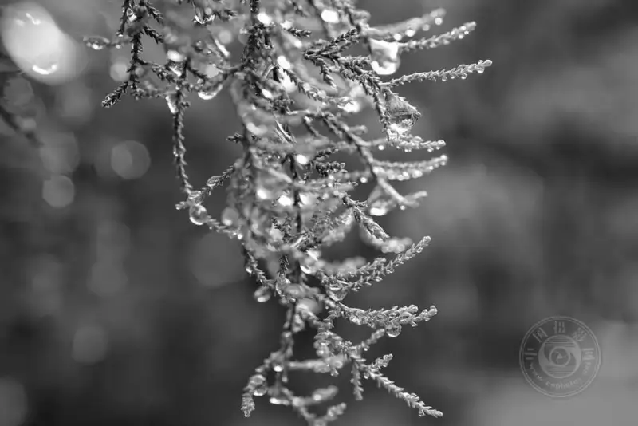
▲After the Rain©julia turnau
2. Settings for rainy-day photography
If you shoot in the rain, one thing to consider is this: do you want to see clear raindrops, or do you want the rain to blur into a semi-transparent curtain?
For both options, you need fairly heavy rain. These are the best settings for rainy-day photography.
a. See clear raindrops
To see raindrops, you need a fairly high shutter speed (at least 1/250, and that may not be enough). At this shutter speed, and with your main light blocked by clouds, you need to set the aperture to give a slightly deeper depth of field. Otherwise, only your subject will be in focus, and you will not catch the rain around it.
Camera settings:
Shutter speed: 1/250 or higher (ideally 1/500 or higher)
Aperture: f/4.0 or higher, if you want to catch the detail of the drops
ISO: as low as possible, but high enough to get the exposure you want with the recommended shutter speed and aperture above
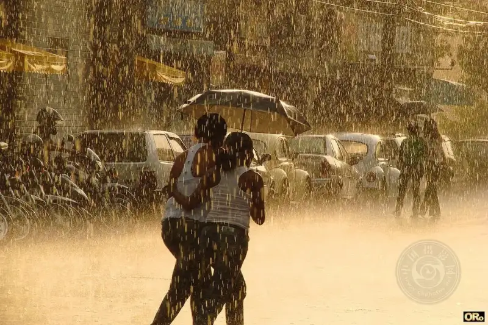
▲Golden Rain©Otacílio Rodrigues
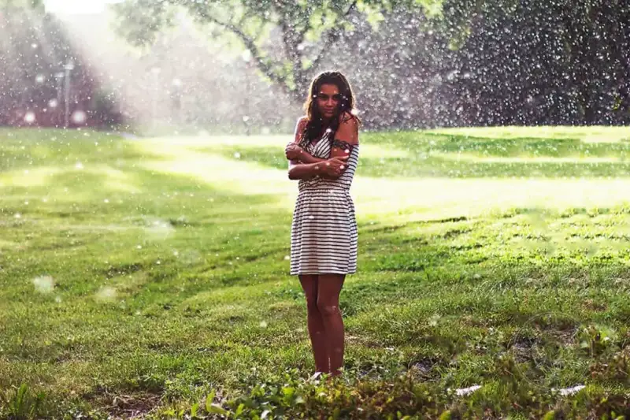
▲Sudden Downpour©Lucia Ramos
b. Get a 'curtain of rain'
If you want a 'curtain of rain,' that is also easy. All you need to do is lower the shutter speed to around 1/30 or 1/15. (At these lower speeds, you may need a tripod, unless you are steady enough to avoid camera shake.) Then open the aperture fairly wide, for a very shallow depth of field.
Camera settings:
Shutter speed: 1/30 or lower (ideally 1/15 or lower)
Aperture: varies with the look you want
ISO: as low as possible. ISO 100 if you have a tripod.
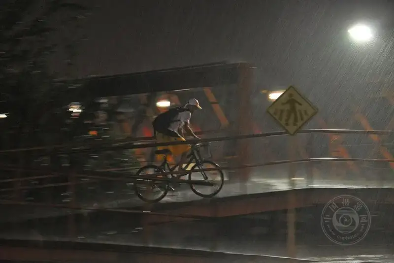
▲Riding in the Rain©Otacílio Rodrigues
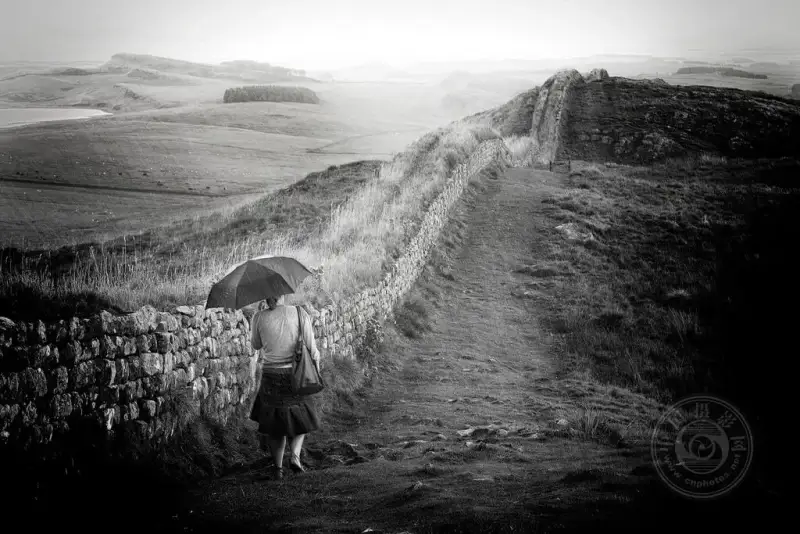
▲The Wall©James Drury
Either way, controlling depth of field is essential if you want to use falling rain in a creative way. Adjusting shutter speed and aperture to control depth of field well takes constant practice.
When you finish shooting in the rain, be sure to wipe the camera, dry the lens with a lens cloth, and take the lens off the camera while it dries.
3. Shoot after the rain
The beauty of shooting after the rain stops is that most objects are still wet and shiny, reflecting the light. Something as simple as a wet sidewalk can have a glowing sheen that lifts an ordinary photo into a beautiful one.
The sheen of the rain also adds apparent depth to the image, because water reflects light in many directions and at many intensities. With this in mind, when you shoot, see if you can make light reflect off a wet surface and straight into your lens.
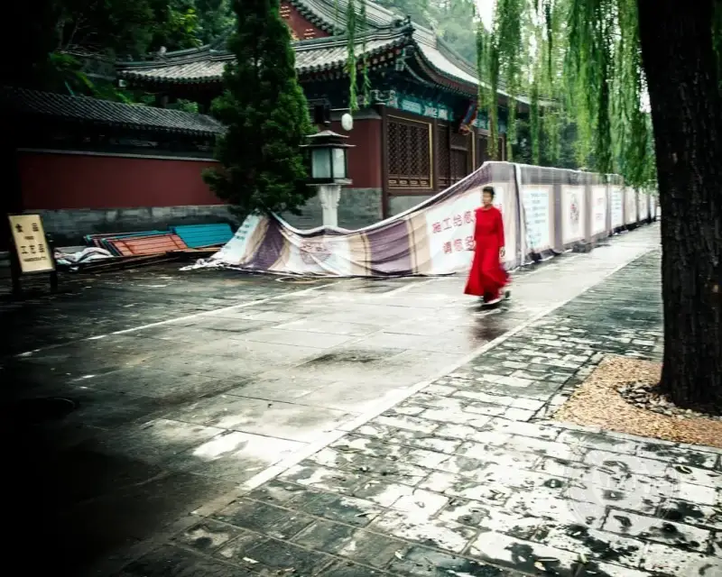
▲She Wears Red©Bryon Lippincott
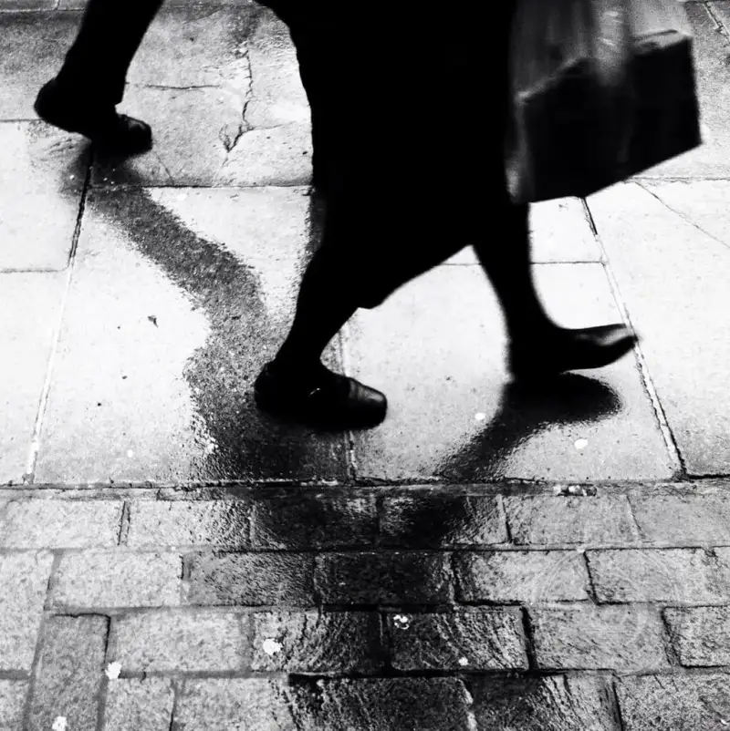
▲'Rain and Feet on the Sidewalk'©Ilovetodig0044
4. Photography inspiration
If you are afraid to go out in the rain, one way to find the motivation is to be inspired by other photographers who braved the storm to take beautiful photos. Here are some sources of inspiration for your rainy-day shooting.
Make a list of places to visit on a rainy day
This list can include places that look great in the rain, and places where you want to see a different view in different weather. For example, if you usually go to the beach on a sunny day, you can try going to the beach on a rainy day to see what the beach looks like in the rain.
If you do not like going out in the rain, having this list is especially important. Because you like to stay home, you need a clear goal to push yourself out the door. With a list of places made in advance, you do not have to think up a goal when it is raining and you have lost your drive.
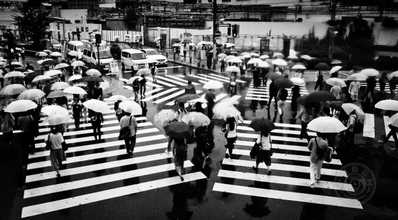
▲Rainy Day©Shirren Lim
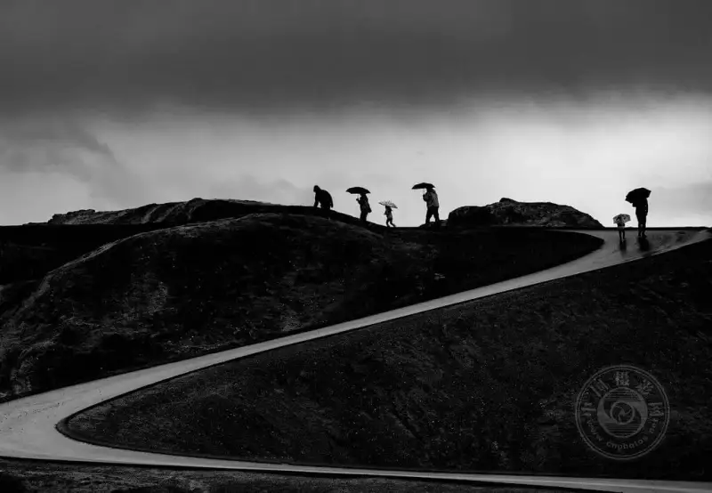
▲Endless Spring Light on a Dangerous Peak, Death Valley©Hadley Johnson
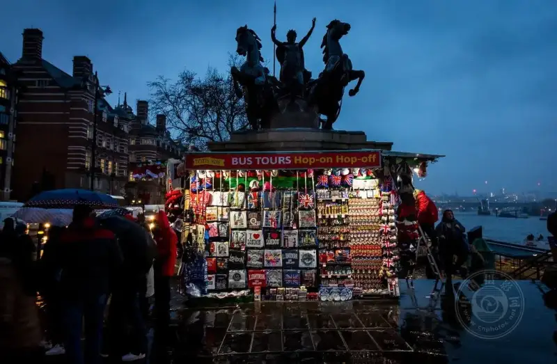
▲Souvenir©Matthew Johnson
▲Oahu©Aj Jaeger
Try different shutter speeds
A small difference in shutter speed has a big effect on a fast-moving subject, such as falling rain. To catch a single falling raindrop, you need a fairly fast shutter speed, at least 1/250. Depending on the scene and the subject, you may also need to adjust the aperture at this speed. Try different settings and see how they change the look of the photo.
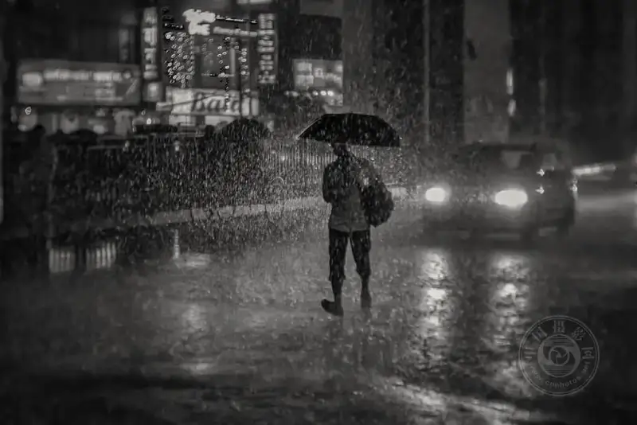
▲Walking in the Rain©Mohammad Rokonuzzaman khan
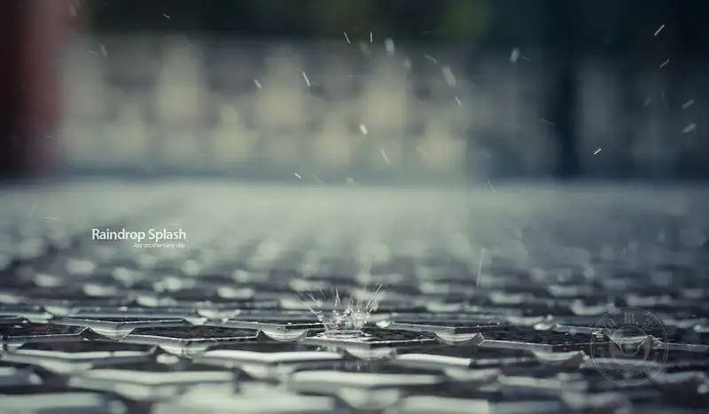
▲Splash of Raindrops©Jochen Vander Eecken
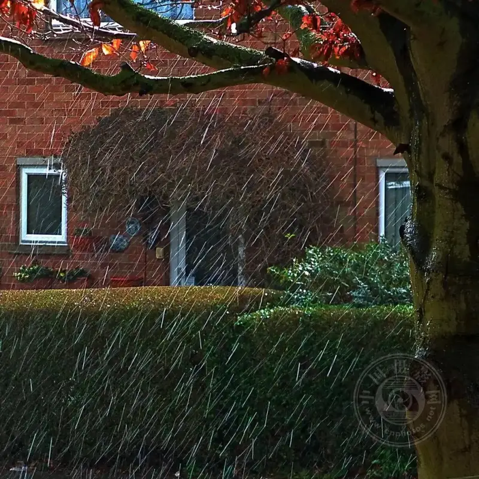
▲Rain©Dave Govier
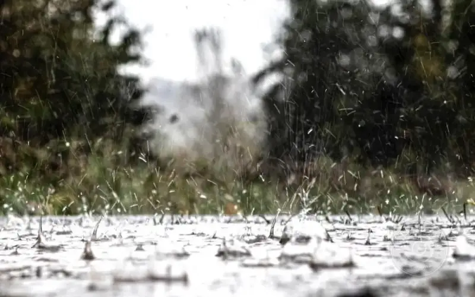
▲Untitled©Eva Kristensen
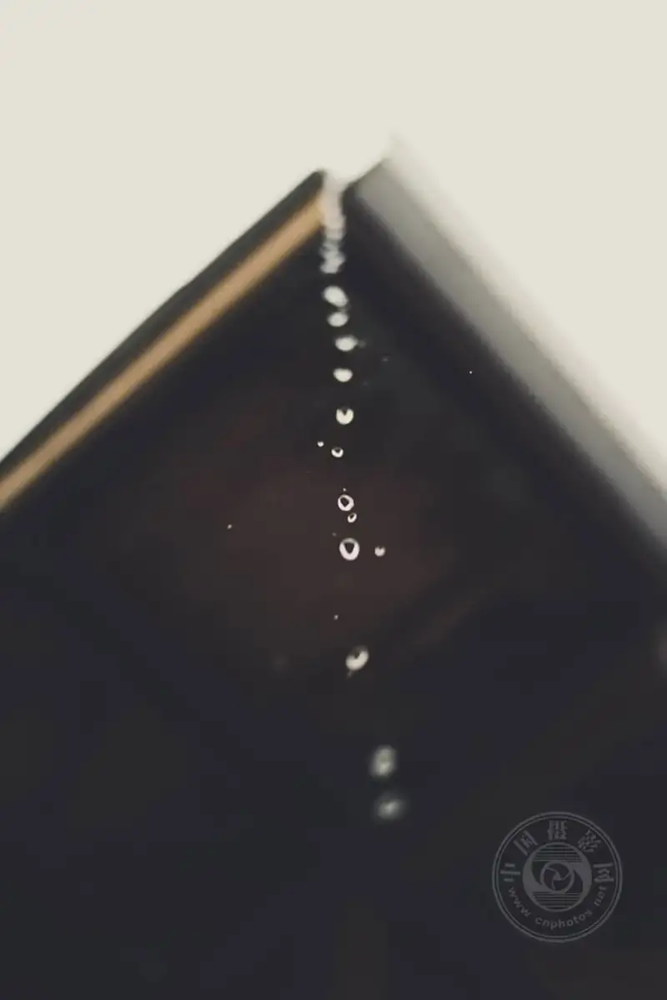
▲Frozen©Julian Bueckert
Use backlight
A gray sky can create soft light, but it also limits the strength of your light. Especially when it rains or when the sun sets, you may need to find another light source to get a good exposure.
A pop-up flash is usually a bad idea, because the rain reflects the flash back at you. Backlight is a better solution. It creates a beautiful glow, lights up the rain, and reflects in the puddles.
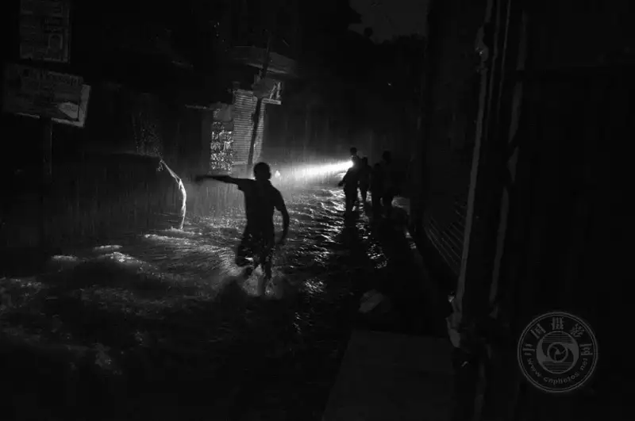
▲Walking in the Rain©Shivji Joshi
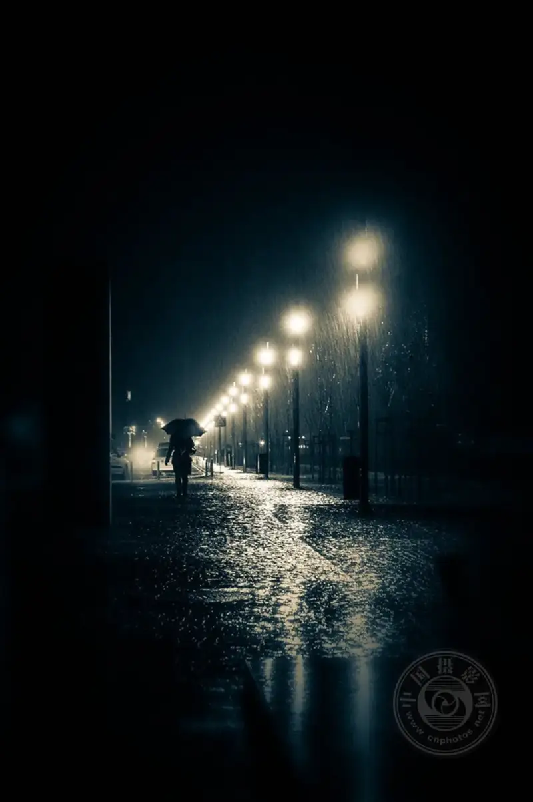
▲'Street'©Joao Cruz Santos
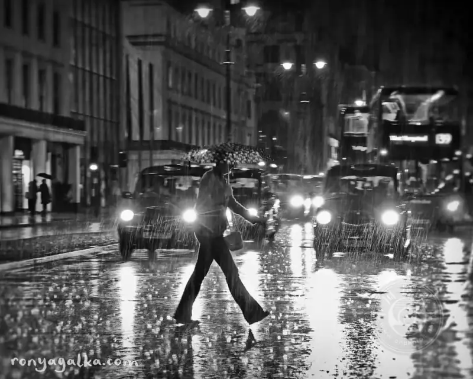
▲Rainy Day Stroll©ro_nya
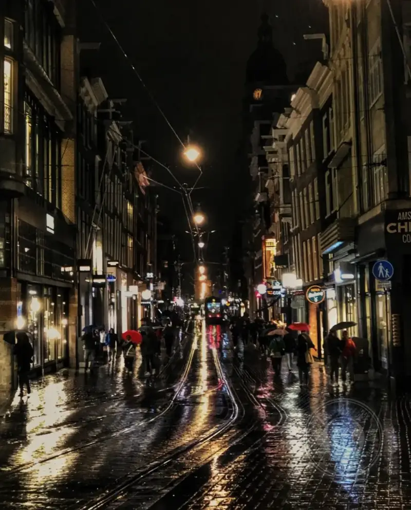
▲A Rainy Scene©Ilina Bareja
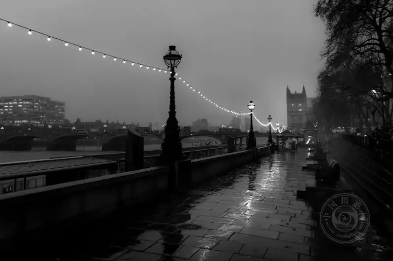
▲Nostalgia©Matthew Johnson
Shoot vivid colors
It is easy to let a rainy day look gloomy, because there is no blue sky or golden sun to brighten the photo. But gloomy is not your only choice. You only need to shoot something colorful, such as bright umbrellas or flowers, to make a pleasing photo. This burst of color also makes your image more striking, because viewers are naturally drawn to a colorful subject.
▲383#2014/365……..:)©unai momoitio
▲A Touch of Color on a Gray Day©R Casey
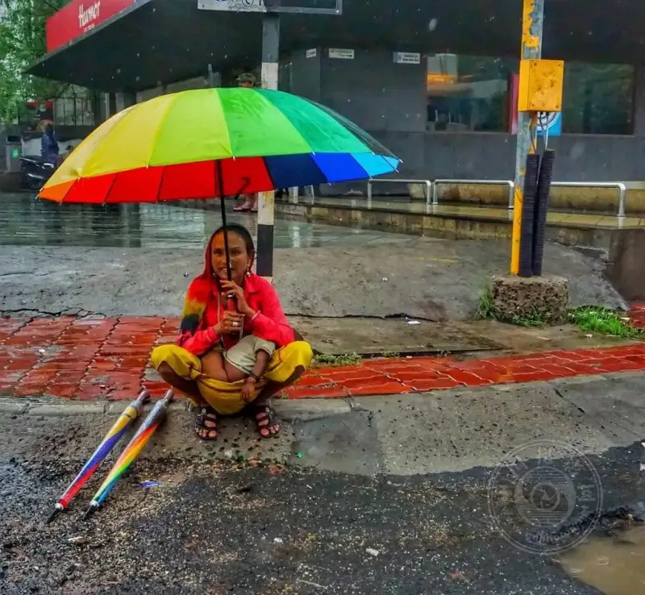
▲Umbrella Mom©Manish (Valmie) Joshi
▲Spring Rain©Elizme
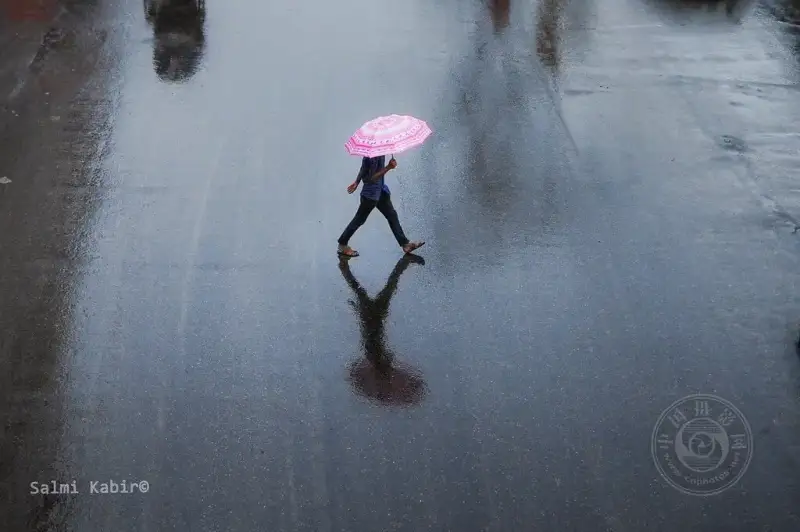
▲A Man With an Umbrella©Salmi Kabir